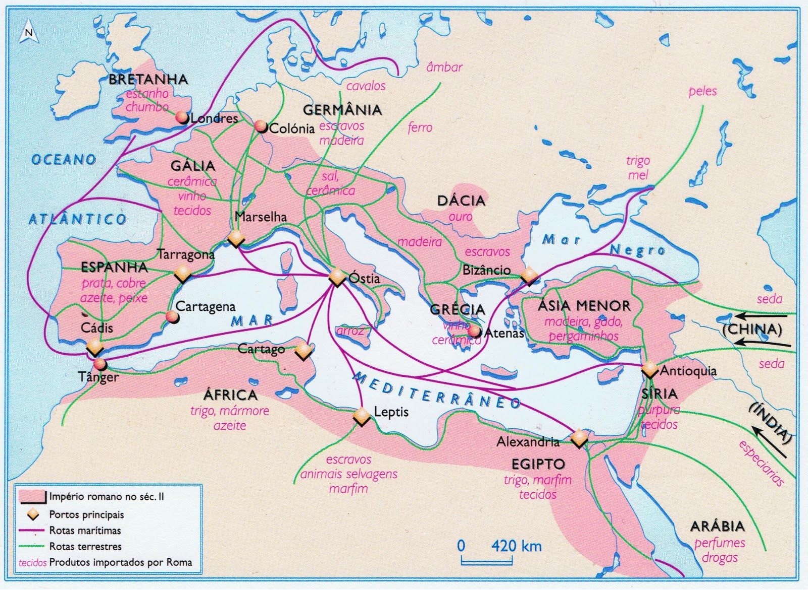
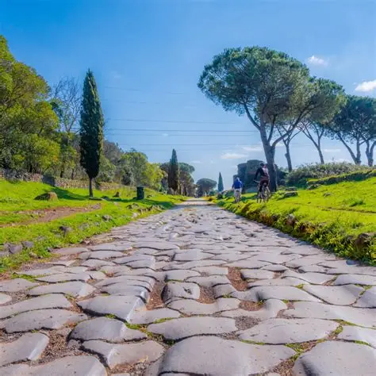
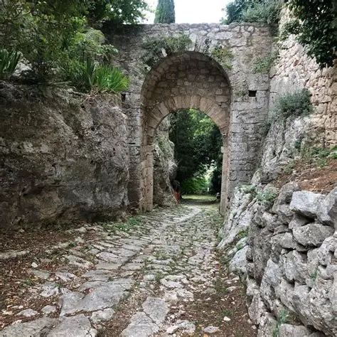
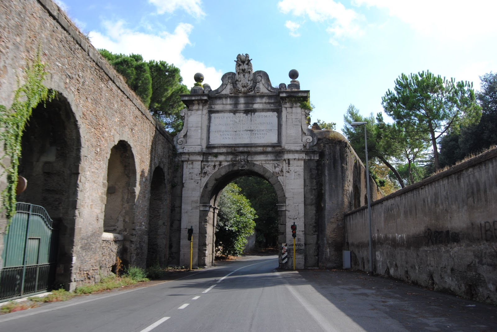
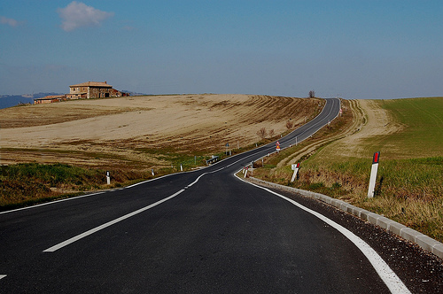
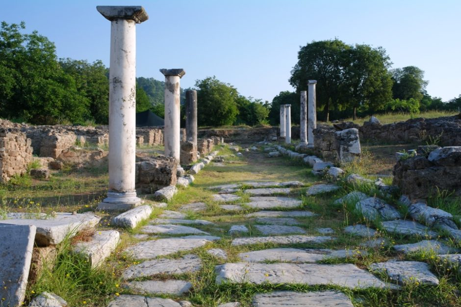

A REDE ROMANA
A Grande Rede de Circulação Circulação Romana
As rotas eram essenciais para manter o vasto território romano conectado. Por meio de estradas, rios e rotas marítimas, Roma conseguia facilitar o transporte de mercadorias, o deslocamento de pessoas, a comunicação e a movimentação de tropas entre regiões muito distantes. Essa extensa rede de circulação também aproximava áreas produtoras, cidades e portos, permitindo que produtos chegassem a diferentes partes do Império.
Mais do que simples caminhos, essas rotas faziam parte da estrutura que mantinha o Império funcionando. Elas favoreciam o comércio, ajudavam na administração das províncias e permitiam que Roma mantivesse contato com suas fronteiras e territórios. Conhecer essas rotas é compreender como um território tão grande conseguia permanecer conectado.

Rota de Alexandria até Óstia
A rota entre Alexandria, no Egito, e Óstia, o principal porto de Roma, era uma das importantes ligações marítimas do Império Romano. Por ela, navios transportavam principalmente trigo e outros produtos do Egito pelo Mediterrâneo até a região de Roma. Ao chegar a Óstia, as mercadorias podiam ser levadas pelo rio Tibre até a cidade de Roma.
Rota da Ásia Menor, Síria e Egito até a China e a Índia
As redes comerciais ligavam o mundo romano a regiões da Ásia, chegando até a Índia e a China. A partir da Ásia Menor e da Síria, mercadorias podiam seguir por rotas terrestres através da Mesopotâmia e da Ásia Central, enquanto o Egito se conectava à Índia por meio das rotas do Mar Vermelho e do Oceano Índico. Essas redes permitiam a circulação de produtos como seda, especiarias, pedras preciosas e tecidos, além de conhecimentos e costumes entre diferentes povos.
Rota da Gália e Bretanha até Roma e o Interior Europeu
A Gália e a Bretanha estavam conectadas a Roma por uma extensa rede de estradas e rotas marítimas. Mercadorias e pessoas podiam seguir dessas regiões até os portos e, depois, alcançar Roma pelo Mediterrâneo. As estradas também ligavam a Gália e a Bretanha ao interior da Europa, facilitando o transporte de produtos, a circulação de pessoas e a comunicação entre diferentes partes do Império Romano.
PRINCIPAIS VIAS
ROTAS QUE MARCARAM ROMA

Via Ápia
A Via Ápia foi uma das principais estradas construídas pelos romanos e uma das mais conhecidas do mundo romano. Sua construção começou em 312 a.C., durante a República Romana, ligando inicialmente Roma a Cápua.
SAIBA MAIS
Com o tempo, a estrada foi ampliada para o sul da Península Itálica, chegando até regiões próximas ao mar Adriático. Sua importância era tanto militar quanto comercial: permitia que tropas se deslocassem com maior rapidez e facilitava o transporte de pessoas e mercadorias entre Roma e outras regiões. A Via Ápia também fazia parte de uma rede maior de estradas que ajudava a conectar diferentes áreas do território romano.

Via Flamínia
A Via Flamínia foi uma importante estrada romana construída durante a República Romana. Ela ligava Roma a regiões do centro e do norte da Península Itálica, facilitando a circulação pelo território.
SAIBA MAIS
A estrada seguia de Roma em direção ao norte, atravessando os Apeninos e chegando até a região do mar Adriático. Ela era utilizada por soldados, comerciantes, viajantes e transportadores, permitindo o deslocamento de pessoas e mercadorias entre Roma e outras cidades. Dessa forma, a Via Flamínia contribuía para a integração das regiões da Itália e para a circulação dentro do território romano.

Via Aurélia
A Via Aurélia foi uma importante estrada romana construída durante a República Romana. Ela ligava Roma às regiões da costa oeste da Península Itálica, seguindo em direção ao norte.
SAIBA MAIS
A estrada acompanhava grande parte do litoral do mar Tirreno e conectava Roma a diferentes cidades e territórios da Itália. Era utilizada para o deslocamento de pessoas, tropas e mercadorias, facilitando a circulação entre Roma e as regiões costeiras. Assim, a Via Aurélia fazia parte da extensa rede de estradas que integrava diferentes áreas do território romano.

Via Cássia
A Via Cássia foi uma importante estrada romana construída durante a República Romana. Ela ligava Roma às regiões da Etrúria e do norte da Península Itálica.
SAIBA MAIS
A estrada seguia em direção ao norte, passando por cidades importantes como Veios, Volsínios e Florença. Era utilizada por soldados, comerciantes, viajantes e transportadores, facilitando a circulação de pessoas e mercadorias. Dessa forma, a Via Cássia ajudava a conectar Roma às regiões do interior e do norte da Itália.

Via Egnácia
A Via Egnácia foi uma importante estrada romana construída nos Bálcãs, ligando a costa do mar Adriático às regiões do leste do Mediterrâneo. Ela fazia parte da rede de caminhos que conectava diferentes territórios romanos.
SAIBA MAIS
A estrada atravessava a Macedônia e a Trácia, passando por cidades como Tessalônica e Filipos, até chegar à região de Bizâncio. Sua posição permitia a circulação de soldados, comerciantes, viajantes e mercadorias entre o oeste e o leste do Império, tornando-a importante para as comunicações e para o comércio.
UMA REDE DE CIRCULAÇÃO
MAIS DO QUE ESTRADAS
As rotas romanas formavam uma grande rede de circulação. Elas ajudavam a conectar diferentes regiões e contribuíam para o funcionamento econômico, militar e administrativo do Império Romano.